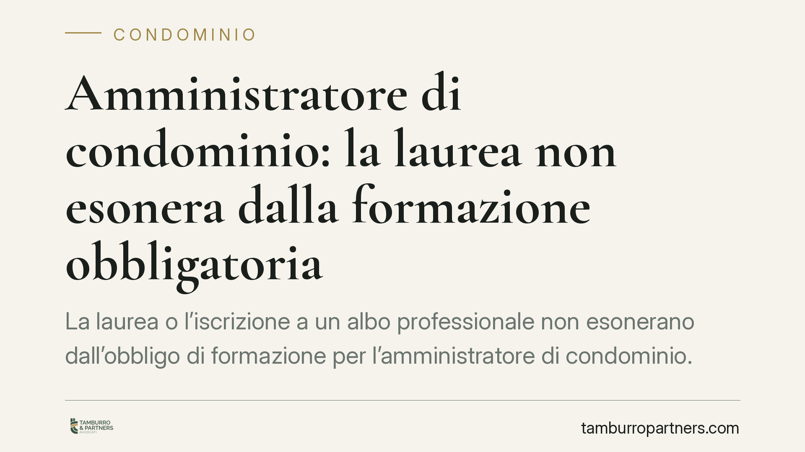

Amministratore di condominio: la laurea non esonera dalla formazione obbligatoria
La laurea o l'iscrizione a un albo professionale non esonerano dall'obbligo di formazione per l'amministratore di condominio. Restano dovuti il corso iniziale di 72 ore e l'aggiornamento annuale di 15 ore. La giurisprudenza considera nulla la nomina di chi è privo dei requisiti previsti dall'art. 71-bis disp. att. c.c.: un principio che incide direttamente sulla validità degli atti gestori.

Il punto della questione
Un laureato in giurisprudenza, un ingegnere o un commercialista possono amministrare un condominio senza frequentare il corso di formazione? La risposta è no. Il titolo di studio e l'iscrizione a un ordine professionale non sostituiscono l'obbligo formativo specifico richiesto a chi assume l'incarico di amministratore.
La distinzione è spesso fraintesa: avere competenze professionali qualificate non equivale ad aver assolto gli adempimenti che la legge pretende per questa particolare funzione.
Inquadramento normativo
L'art. 71-bis delle disposizioni di attuazione del codice civile, introdotto dalla riforma del condominio (L. 220/2012), elenca i requisiti per poter svolgere l'incarico di amministratore. Tra questi, la lettera g) richiede di «aver frequentato un corso di formazione iniziale e svolgere attività di formazione periodica in materia di amministrazione condominiale».
Il contenuto e la durata di tali corsi sono fissati dal D.M. Giustizia n. 140/2014: 72 ore di formazione iniziale (comprensive di una verifica finale) e almeno 15 ore di aggiornamento annuale. Il decreto non prevede esenzioni collegate al possesso di una laurea o all'iscrizione a un albo.
Unica deroga rilevante: chi amministra esclusivamente il proprio condominio (amministratore-condomino) non è tenuto agli obblighi formativi. La deroga, però, vale solo in quel caso specifico e non si estende a chi gestisce stabili altrui.
La posizione della giurisprudenza
La mancanza dei requisiti dell'art. 71-bis non è una semplice irregolarità formale. Secondo l'orientamento consolidato, la nomina di un amministratore che non possiede i requisiti di legge — inclusa la formazione — è nulla. Significa che l'atto di nomina è privo di effetti sin dall'origine e può essere fatto valere da qualunque condomino interessato, senza i termini di decadenza propri dell'impugnazione delle delibere assembleari.
La conseguenza pratica è pesante: gli atti compiuti dall'amministratore privo dei requisiti restano esposti a contestazione, con ricadute su rapporti contrattuali, riscossione delle quote e rappresentanza del condominio in giudizio.
Implicazioni pratiche
Per il professionista che intende offrire servizi di amministrazione condominiale, il messaggio è chiaro: la competenza acquisita con gli studi o l'esercizio della professione non basta. Prima di accettare l'incarico occorre completare il percorso formativo e documentarlo.
Per i condòmini, l'attenzione va posta in fase di nomina. Verificare i requisiti dell'amministratore non è un eccesso di zelo: è una tutela contro il rischio di vedere invalidati atti e delibere. La verifica dovrebbe essere fatta prima della nomina e rinnovata quando emergono dubbi sulla regolarità della posizione.
Per l'amministratore già in carica, il rispetto dell'obbligo di aggiornamento annuale è continuativo. Non è un adempimento esaurito con il corso iniziale: la mancata formazione periodica può essere invocata per contestare la permanenza dei requisiti.
Cosa fare in concreto
- Verifica la documentazione formativa: richiedi all'amministratore, prima della nomina, l'attestato del corso iniziale e la prova dell'aggiornamento annuale più recente.
- Non dare per scontato il titolo di studio: una laurea o l'iscrizione a un albo non valgono come esonero. Accertati che il percorso ex D.M. 140/2014 sia stato effettivamente svolto.
- Conserva gli attestati nel fascicolo condominiale: la tracciabilità dei requisiti tutela l'assemblea in caso di contestazioni future.
- Se amministri condomini altrui, pianifica l'aggiornamento: programma per tempo le 15 ore annuali per evitare interruzioni nella validità dei requisiti.
- In caso di dubbi sulla validità della nomina, consigliamo di far valutare la posizione prima di assumere decisioni che incidono su delibere o contratti già in essere.
Perché conta
La vicenda ribadisce che la funzione di amministratore ha un proprio statuto di accesso, autonomo rispetto alle qualifiche professionali generali. La formazione non è un formalismo: è un requisito di validità dell'incarico, con effetti diretti sulla tenuta degli atti di gestione.
*Contributo informativo a cura di Tamburro & Partners - Avv. Giuseppe Tamburro. Non costituisce parere legale.*
Ogni condominio ha una storia a sé.
Se gestisci un'amministrazione e vuoi un confronto su una specifica questione condominiale, scrivi allo studio. Ti rispondiamo entro un giorno lavorativo.